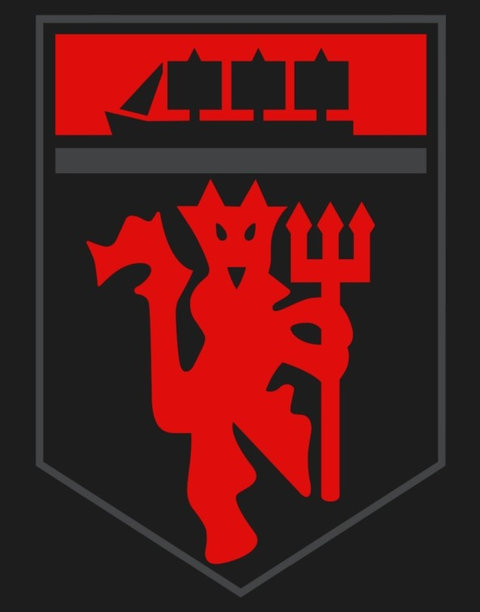

Welcome to the Offical(not)site for Manchester United.
Here you're going learn all about the Red Devils from their
beiginings to all the way to the 21st century. This site contains all the information you nee
d on the red devils; their current team and how their doing.

History of Manchester United

Manchester United is a futbol club that plays in the Premier League; an competitive football with many
other clubs fighting for the premier league title each year. United had begun as early as the late 19th century.
Its predicessor.In 1878 the Newton Heath L&YR Football Club was established but during its 1892-1893 they changed
its named to Manchester United in 1902 and went on to win the FA and division one champions and moved to Old Trafford
in 1910 their iconic stadium to the day. After that futbol had went on a break due the Great War; they had started
out strong but began a yo-yo club; a club that bounces back between leagues at the top of the division below and
being regulated once again. This all changed in 1986 when a new manager by the name of Sir Alex Ferguson was
appointed as manager; he had basically made the club an extreme threat and is know as one of the greatest coaches
of all time and resigned in 2013.

Alex Ferguson Era
Manchester United became known as one of the greatest club when they hired
Sir Alex Ferguson as their head coach and led them from 1986 to 2013. He was so
great that he was knighted in 1999 for his contribution to the football world in
europe. He had a rocky start but after that he had done the first and the impossible.
He had did the treble and the first of its kind, winning the premier league, UEFA Champions
league and the FA and knighted because of that in 1999. He had also taught some of the
greatest players in the world. He resigned with 25+ major trophies, below is some
of those great players
Christiano Ronaldo
Cristiano Ronaldo is regarded as one of the greatest
football players to touch the field after his success at
Manchester United, he was sold to Real Madrid for a record
80 million euros and had won 4 UEFA champions with them and is
regarded as the best portugal player in the world and now plays
in Serie A at Juevents.

United Today
Unitted today is a completely differnt team as sinc Sir Alex
retired many coaches hav come and gone and one coach that seems
to be stayng for a while is Jose Mourhino who leads a relitively
new starting XI. They're a little slow to start as theirs turmoil
between the coach and the players. They've also had their worst start
in 20 years in the Premier Leauge now sitting at 8th place to
low for a club like Manchester. Today rhey're second
in their group being beaten by Jueventes last
Tuesday.But even if the Red Devils are having a rocky start
, I still stand United.